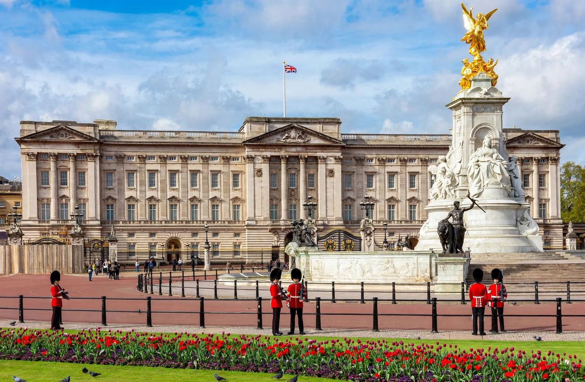

| Royal Households | |
|---|---|
| Principal household | Household of the Sovereign (Buckingham Palace) |
| Head of the Household | Lord Chamberlain |
| Main departments | Private Secretary's Office; Privy Purse and Treasurer's Office; Master of the Household's Department; Lord Chamberlain's Office; Royal Collection Trust |
| Other households | Households of the Prince and Princess of Wales and other working royals |

The Royal Households of the United Kingdom are the collective departments and staff supporting the British sovereign and other members of the royal family. The principal household is that of the monarch, based at Buckingham Palace, and is organised under several great offices whose origins reach back centuries.
The five main departments of the Sovereign's Household are the Private Secretary's Office (official and constitutional advice), the Privy Purse and Treasurer's Office (finance), the Master of the Household's Department (domestic operations and hospitality), the Lord Chamberlain's Office (ceremonial), and the Royal Collection Trust (care of the Royal Collection). The Lord Chamberlain is the senior officer of the Household, while the Keeper of the Privy Purse manages the Sovereign's finances, including the Sovereign Grant that funds official duties. Historically, households have been maintained for consorts and heirs; Charles II's restored court in the 17th century formalised many of the offices that survive today.
Separate, smaller households support the Prince and Princess of Wales (based at Kensington Palace) and other working members of the royal family. Following the accession of Charles III in 2022, the households of the King and Queen were consolidated at Buckingham Palace and Clarence House, with a staff of several hundred across all establishments.